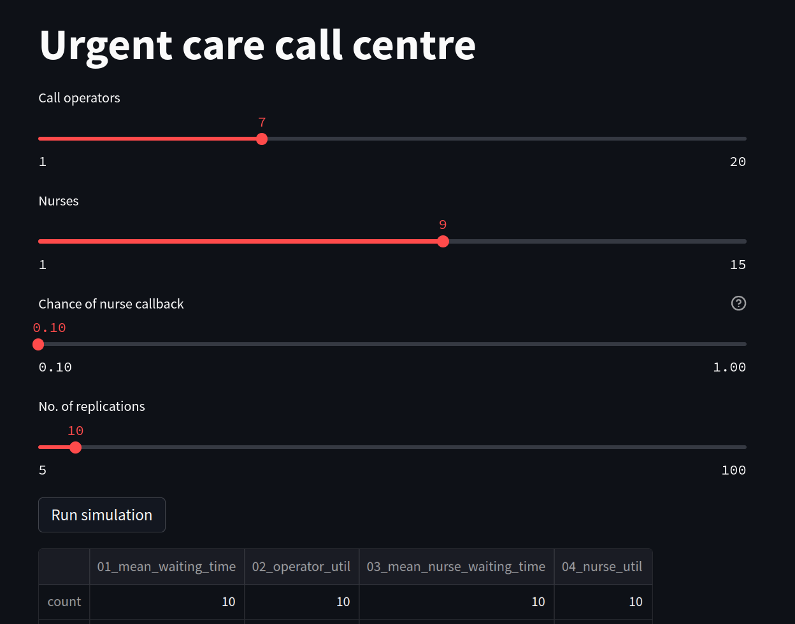

An interactive app#
We will now modify our app so that it is interactive. We will do this using streamlit.slider widgets
1. Adding a first slider#
A slider provides a simple way to vary an input. We specify a minimum and maximum value inputs can accept, the default value, and a step.
slider_name = st.slider(slider_name, min_value, max_value, default_value, step)
Create a new file called interactive_app.py and copy paste in the code from basic_app.py
To create one to represent the number of operators we can include the following code:
n_operators = st.slider('Call operators', 1, 20, 13, step=1)
This displays a slider on the page with a label “Call operators”. Its minimum value is 1.0, its maximum value is 20.0. its default value is 13.0 and it increments (slides) by 1. The variable n_operators is an int.
2. How streamlit works#
Each time a user updates the value of a slider or clicks the run button streamlit executes the full interactive_app.py script i.e. from top to bottom. This means that the int value of n_operators changes each time the slider is moved. This also explains how the st.button function works. When clicked it is assigned the value True. Streamlit then executes the full script and will also execute the conditional logic contained under the if statement. When a slider is change the button has a value of False so the model will not run unnecessarily.
3. Add remaining sliders#
We can do the same for nurses, chance of callback and number of replications
n_operators = st.slider('Call operators', 1, 20, 13, step=1)
n_nurses = st.slider('Nurses', 1, 15, 9, step=1)
chance_callback = st.slider('Chance of nurse callback', 0.1, 1.0, 0.4,
step=0.05, help='Set the chance of a call back')
n_reps = st.slider("No. of replications", 5, 100, step=1)
4. Run the app#
As before run the app using the following command:
streamlit run interactive_app.py
The full code listing and a screen shot of the app is below.
Full listing#
'''
The code in this streamlit script modifies the basic script
we had for running a scenario
'''
import streamlit as st
from model import Experiment, multiple_replications
# We add in a title for our web app's page
st.title("Urgent care call centre")
# ##############################################################################
# MODIFICATION: set the variables for the run
# these are just a subset of the total available for this example...
# in streamlit we are going to set these using sliders.
# set number of resources
n_operators = st.slider('Call operators', 1, 20, 13, step=1)
n_nurses = st.slider('Nurses', 1, 15, 9, step=1)
# set chance of nurse
chance_callback = st.slider('Chance of nurse callback', 0.1, 1.0, 0.4,
step=0.05, help='Set the chance of a call back')
# set number of replications
n_reps = st.slider("No. of replications", 5, 100, step=1)
################################################################################
# create experiment
exp = Experiment(n_operators=n_operators, n_nurses=n_nurses,
chance_callback=chance_callback)
# A user must press a streamlit button to run the model
if st.button("Run simulation"):
# run multiple replications of experment
results = multiple_replications(exp, n_reps=n_reps)
# show results
st.dataframe(results.describe())
2023-06-30 17:40:53.411
Warning: to view this Streamlit app on a browser, run it with the following
command:
streamlit run /home/tom/miniconda3/envs/sim/lib/python3.9/site-packages/ipykernel_launcher.py [ARGUMENTS]
2023-06-30 17:40:53.413 Session state does not function when running a script without `streamlit run`
